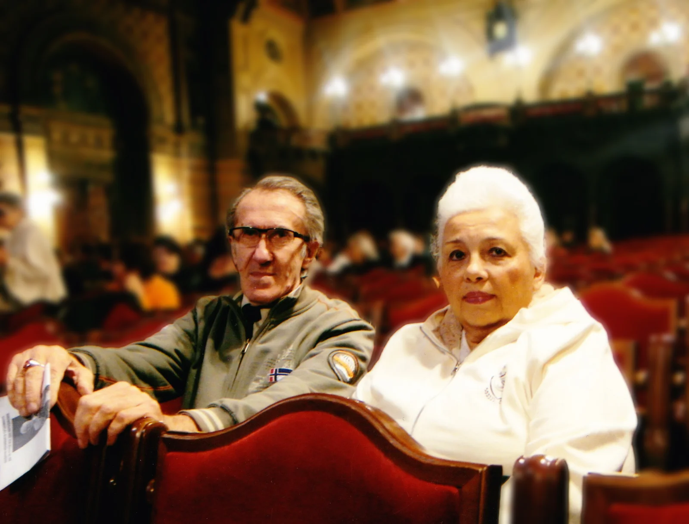
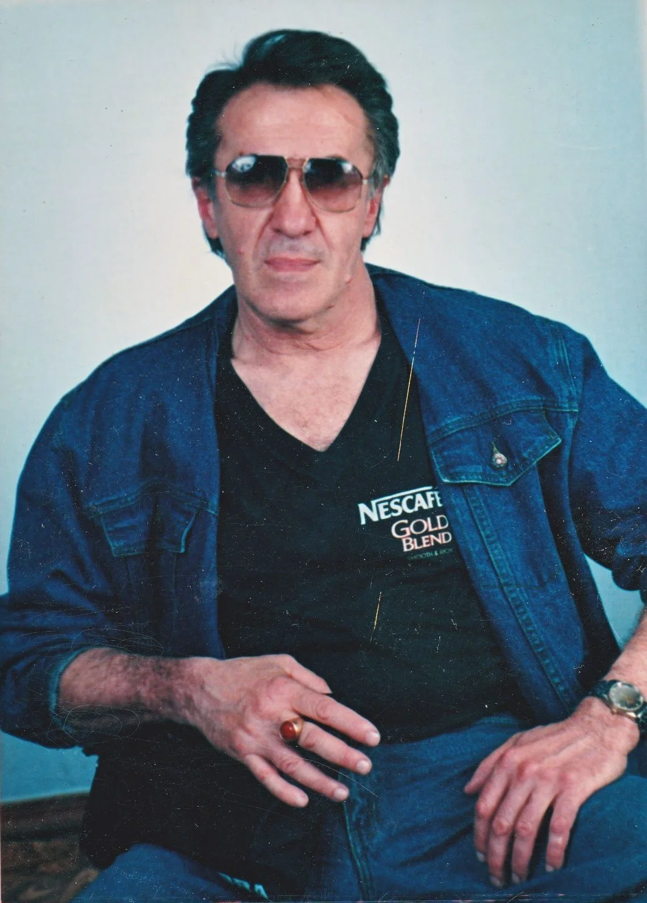
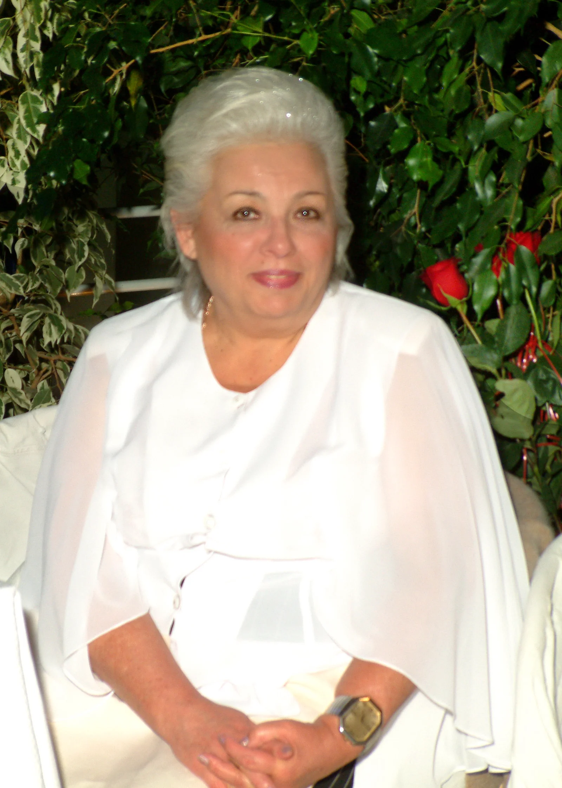
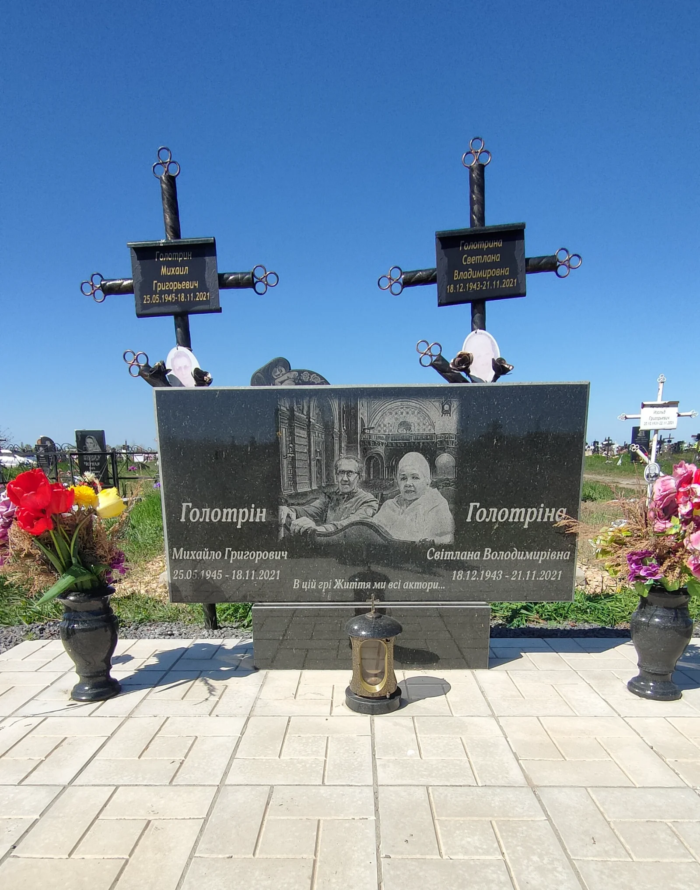

Цифровой Мемориал
СЕМЬИ ГОЛОТРИНЫХ
Люди живы, пока жива память о них. Эта страница создана с любовью и благодарностью моим родителям, чтобы сохранить их историю для будущих поколений.

СЕМЬИ ГОЛОТРИНЫХ


Заведующий постановочной частью Одесской филармонии, заслуженный деятель эстрадного искусства Украины, творческий человек и мудрый, любящий отец.

Инженер-сметчик с непреклонным сибирским характером. Строгая, но глубоко любящая мать, посвятившая свою жизнь заботе о будущем семьи.
Главные вехи истории семьи
Начало документально подтвержденной генеалогической ветви. Более 300 лет непрерывной истории, объединяющей поколения предков по материнской и отцовской линиям.
Иркутск. Трудные послевоенные годы, закалившие сибирский характер и здоровье.
Евпатория. Начало пути творческого человека, влюбленного в сцену и небо.
Свадьба Михаила и Светланы.
Рождение дочери Татьяны.
Родители принимают стратегическое решение, определив профессию дочери.
Свадьба Татьяны и Владислава.
Рождение внучки Наташеньки.
Рождение внука Игореши.
Род продолжается. Глубокое генеалогическое исследование (более 250 имен), подкрепленное ДНК-экспертизой и работой с международными архивами (MyHeritage), принимает форму. Я прошла долгий путь – от поиска семейных корней до теплых, живых воспоминаний о моих родителях. Этот Мемориал стал частью моего большого проекта - Цифрового Наследия (Digital Legacy), в который постепенно вплетаются ветви родных моей семьи. Но для меня это прежде всего место, где живут воспоминания о самых близких людях. Я приглашаю вас - друзей, родных, всех, кто знал маму и папу - зажечь свою Свечу Памяти в этом месте, где не существует времени и расстояний.
Каждое доброе слово - это невидимый огонек, согревающий сквозь холод утраты. Зажгите свечу и поделитесь воспоминанием. Пусть свет нашей памяти продолжает согревать их души.

Введите финальную ссылку на ваш сайт, чтобы создать код для памятника.
СЕМЬИ ГОЛОТРИНЫХ
Наведите камеру смартфона на код, чтобы открыть страницу памяти
Здесь бережно сохранена история нашей семьи